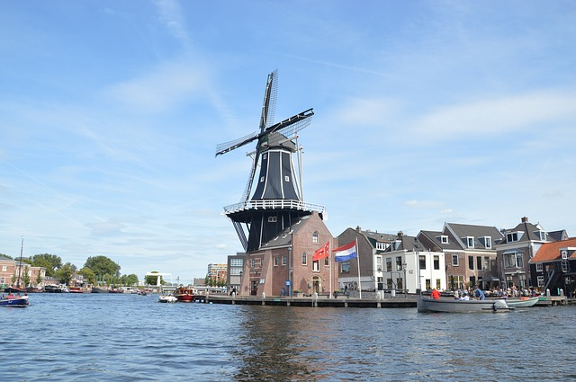
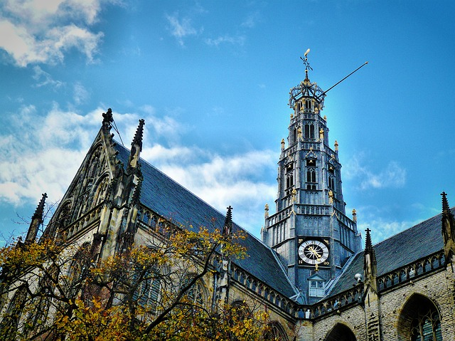
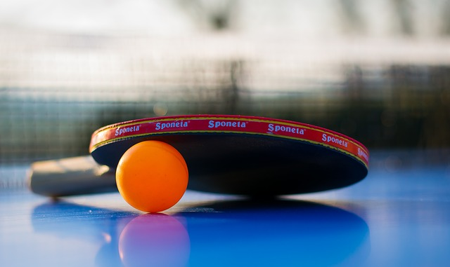
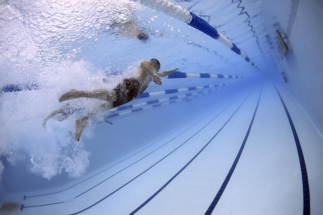

Haarlem has a rich history dating back to pre-medieval times, as it lies on a thin strip of land above sea level known as the strandwal (beach ridge), which connects Leiden to Alkmaar. The people on this narrow strip of land struggled against the waters of the North Sea from the west, and the waters of the IJ and the Haarlem Lake from the east. Haarlem became wealthy with toll revenues that it collected from ships and travellers moving on this busy North-South route. However, as shipping became increasingly important economically, the city of Amsterdam became the main Dutch city of North Holland during the Dutch Golden Age.
 Sport clubs
1. Billiards club Velse
Billiards for young and old, both during the day and in the evening. Possibility to take lessons. Own, private location.
3. Capoeira School Semente
Capoeira lessons in Cultural Center De Egelantier for adults and children from 7 years. Also Capoeira workshops and performances for schools and companies on location.

5. Sports club Olympia
Sports club with badminton, billiards, baseball, softball, clover jacket, frisbee, football, indoor football, darts. SV Olympia Haarlem has its own sports hall.

7. Table tennis club Togspin
Table tennis club TSTZ Haarlem is a cozy club for young and old. You can play competition and / or recreational. Look at the website!
9. Haarlem Water Club De Watervrienden
Badminton club Kennemerland plays on Wednesday evening in Sporthal vd Geest, behind swimming pool “De Planeet” in Haarlem-Noord. The season runs from September to July.
